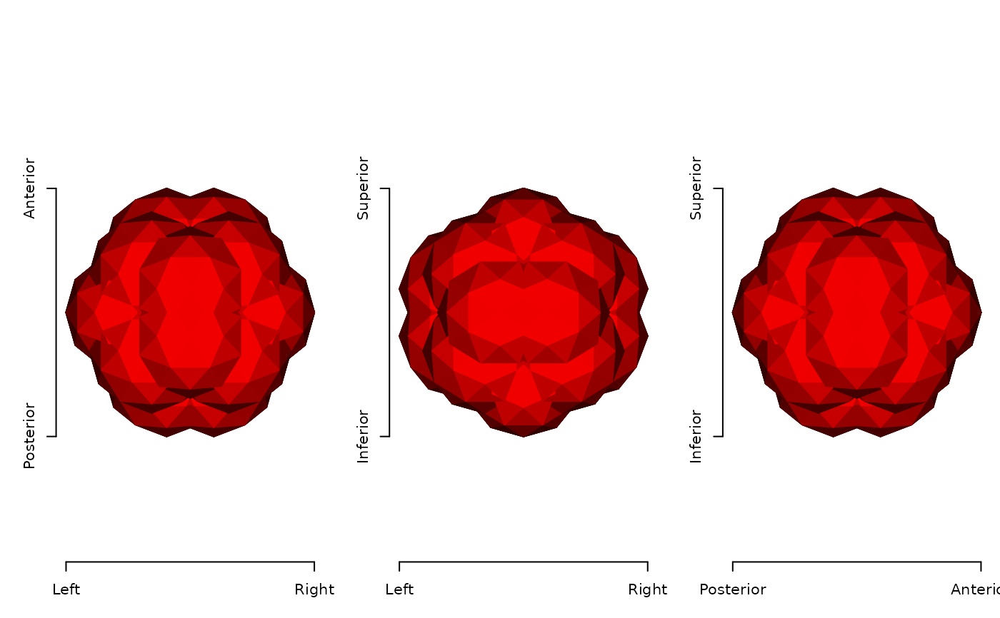
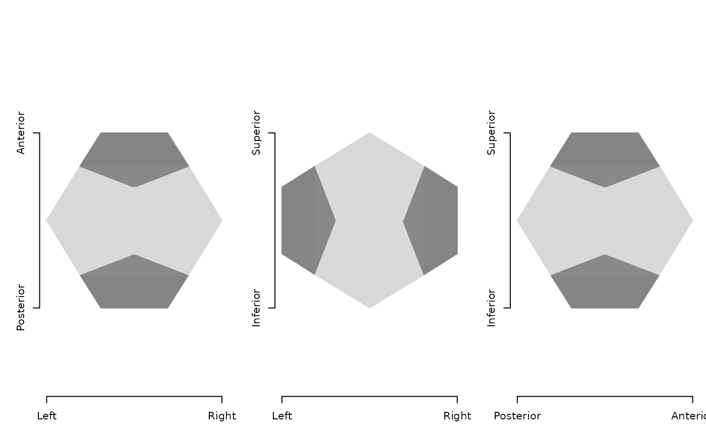
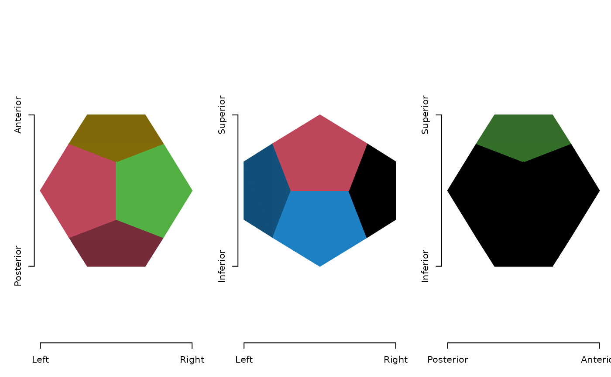
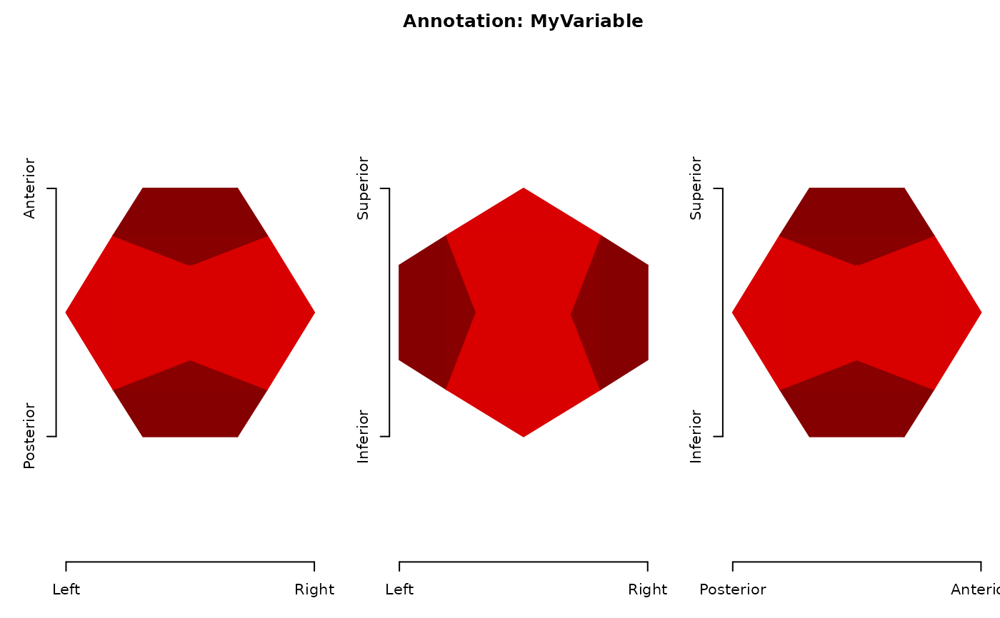
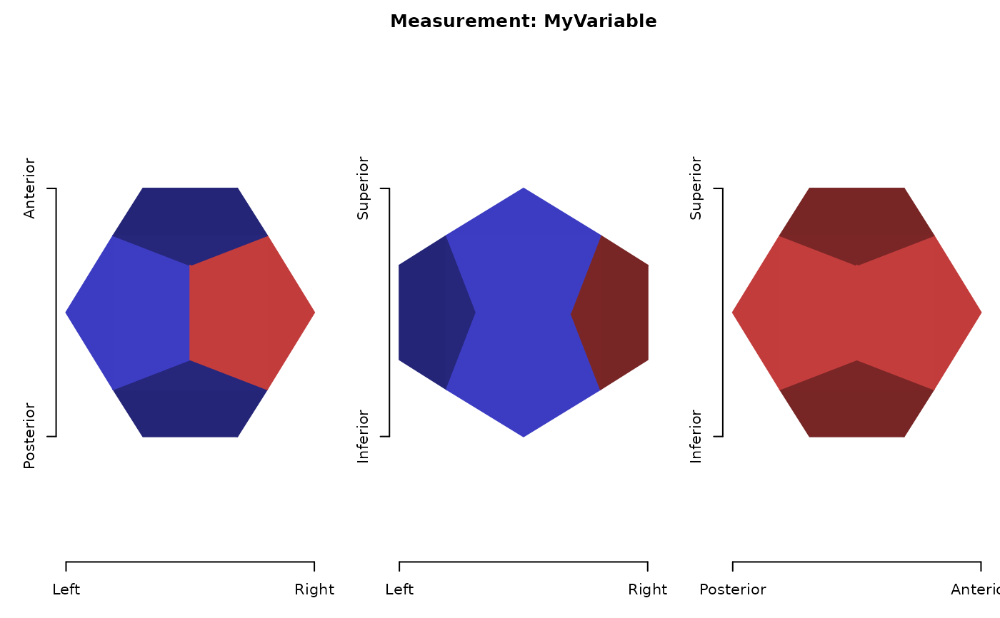

Convert other surface formats to ieegio surface
Usage
as_ieegio_surface(x, ...)
# Default S3 method
as_ieegio_surface(
x,
vertices = x,
faces = NULL,
face_start = NA,
transform = NULL,
vertex_colors = NULL,
annotation_labels = NULL,
annotation_values = NULL,
measurements = NULL,
time_series_slice_duration = NULL,
time_series_value = NULL,
name = NULL,
...
)
# S3 method for class 'character'
as_ieegio_surface(x, ...)
# S3 method for class 'ieegio_surface'
as_ieegio_surface(x, ...)
# S3 method for class 'mesh3d'
as_ieegio_surface(x, ...)
# S3 method for class 'fs.surface'
as_ieegio_surface(x, ...)Arguments
- x
R object or file path
- ...
passed to default method
- vertices
nby 3 matrix, each row is a vertex node position- faces
(optional) face index, either zero or one-indexed (
MatlabandRstart counting from 1 whileCandPythonstart indices from 0); one-index face order is recommended- face_start
(optional) either 0 or 1, indicating whether
facesis zero or one-indexed; default isNA, which will check whether the minimum value offacesis 0. If so, thenfaceswill be bumped by 1 internally- transform
(optional) a 4 by 4 matrix indicating the vertex position to scanner
RAStransform. Default is missing (identity matrix), i.e. the vertex positions are already in the scannerRAScoordinate system.- vertex_colors
(optional) integer or color (hex) vector indicating the vertex colors
- annotation_labels
(optional) a data frame containing at the following columns. Though optional,
annotation_labelsmust be provided whenannotation_valuesis provided"Key"unique integers to appear in
annotation_values, indicating the key of the annotation label"Label"a character vector (strings) of human-readable labels of the corresponding key
"Color"hex string indicating the color of the key/label
- annotation_values
(optional) an integer table where each column is a vector of annotation key (for example, 'FreeSurfer' segmentation key) and each row corresponds to a vertex node
- measurements
(optional) a numeric table where each column represents a variable (for example, curvature) and each row corresponds to a vertex node. Unlike annotations, which is for discrete node values,
measurementsis for continuous values- time_series_slice_duration
(optional) a numeric vector indicating the duration of each slice; default is
NA- time_series_value
(optional) a numeric matrix (
nbym) wherenis the number of vertices andmis the number of time points, hence each column is a time slice and each row is a vertex node.- name
(optional) name of the geometry
Value
An ieeg_surface object; see read_surface or
'Examples'.
Examples
# ---- Simple usage
# vertices only
dodecahedron_vert <- matrix(
ncol = 3, byrow = TRUE,
c(-0.62, -0.62, -0.62, 0.62, -0.62, -0.62, -0.62, 0.62, -0.62,
0.62, 0.62, -0.62, -0.62, -0.62, 0.62, 0.62, -0.62, 0.62,
-0.62, 0.62, 0.62, 0.62, 0.62, 0.62, 0.00, -0.38, 1.00,
0.00, 0.38, 1.00, 0.00, -0.38, -1.00, 0.00, 0.38, -1.00,
-0.38, 1.00, 0.00, 0.38, 1.00, 0.00, -0.38, -1.00, 0.00,
0.38, -1.00, 0.00, 1.00, 0.00, -0.38, 1.00, 0.00, 0.38,
-1.00, 0.00, -0.38, -1.00, 0.00, 0.38)
)
point_cloud <- as_ieegio_surface(dodecahedron_vert)
plot(point_cloud, col = "red")

# with face index
dodecahedron_face <- matrix(
ncol = 3L, byrow = TRUE,
c(1, 11, 2, 1, 2, 16, 1, 16, 15, 1, 15, 5, 1, 5, 20, 1, 20, 19,
1, 19, 3, 1, 3, 12, 1, 12, 11, 2, 11, 12, 2, 12, 4, 2, 4, 17,
2, 17, 18, 2, 18, 6, 2, 6, 16, 3, 13, 14, 3, 14, 4, 3, 4, 12,
3, 19, 20, 3, 20, 7, 3, 7, 13, 4, 14, 8, 4, 8, 18, 4, 18, 17,
5, 9, 10, 5, 10, 7, 5, 7, 20, 5, 15, 16, 5, 16, 6, 5, 6, 9,
6, 18, 8, 6, 8, 10, 6, 10, 9, 7, 10, 8, 7, 8, 14, 7, 14, 13)
)
mesh <- as_ieegio_surface(dodecahedron_vert,
faces = dodecahedron_face)
plot(mesh)

# with vertex colors
mesh <- as_ieegio_surface(dodecahedron_vert,
faces = dodecahedron_face,
vertex_colors = sample(20))
plot(mesh, name = "color")

# with annotations
mesh <- as_ieegio_surface(
dodecahedron_vert,
faces = dodecahedron_face,
annotation_labels = data.frame(
Key = 1:3,
Label = c("A", "B", "C"),
Color = c("red", "green", "blue")
),
annotation_values = data.frame(
MyVariable = c(rep(1, 7), rep(2, 7), rep(3, 6))
)
)
plot(mesh, name = "annotations")

# with measurements
mesh <- as_ieegio_surface(
dodecahedron_vert,
faces = dodecahedron_face,
measurements = data.frame(
MyVariable = dodecahedron_vert[, 1]
)
)
plot(mesh, name = "measurements",
col = c("blue", "gray", "red"))
